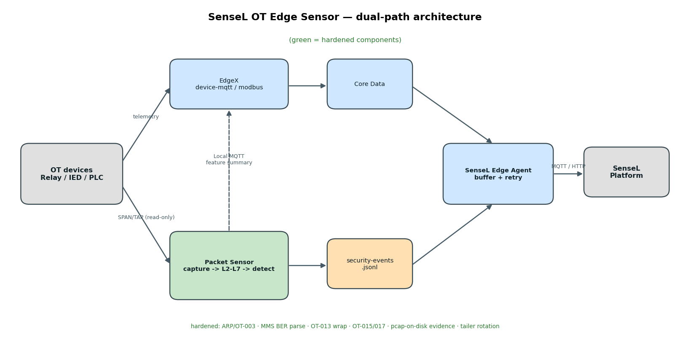
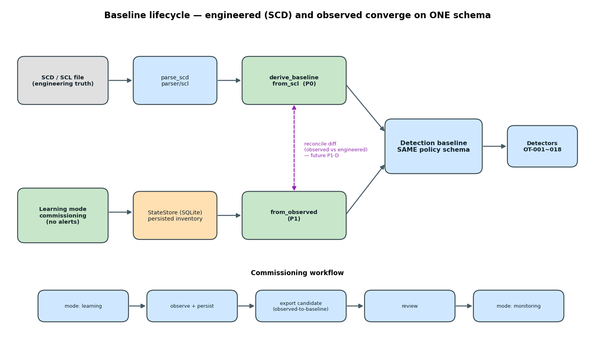

為什麼要多這個分支、跟誰不同、有什麼優勢 — 用真實輸出走一遍

$ python3 scripts/scd-to-baseline.py lab/61850/sample.scd --stdout derived baseline: 2 assets, 1 GOOSE publishers, 1 MMS IEDs goose_publishers: [{ asset_id: ied-01, appid: 1000, max_silence_sec: 8.0 }] mms_ieds: [{ ied_ip: 192.168.10.50, allowed_mms_clients: [192.168.10.10] }]
GOOSE 以 APPID 為權威 key（SCL 的 MAC 是目的多播、非來源 MAC）
sensor: detection.mode = learning # commissioning alerts raised during learning : (none) $ python3 scripts/observed-to-baseline.py learned-state.db --stdout candidate goose_publishers : [{ publisher_mac: 00:11:22:33:44:55, appid: 1000 }] candidate mms_ieds : [{ ied_ip: 192.168.10.50, clients: [192.168.10.10] }]
學習期間 零告警，產出候選 baseline（與 SCD 同一 schema）
$ python3 scripts/attacks-selftest.py
OK — all 18 implemented rules fired

細節見 docs/first-principles-redesign.md · docs/walkthrough.md